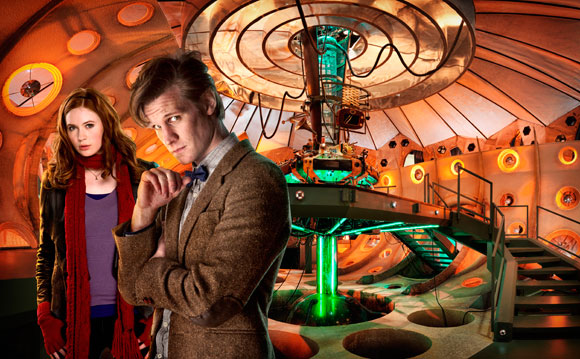
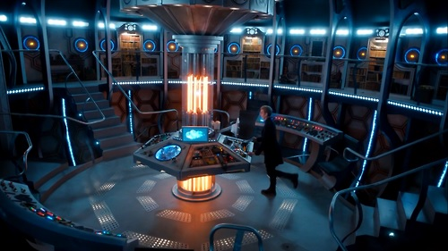
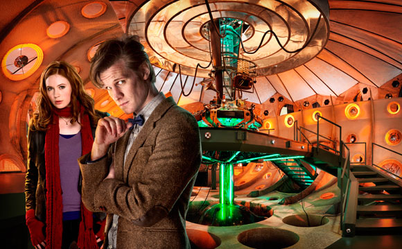
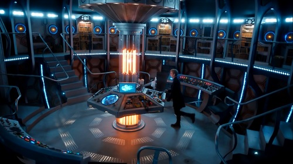
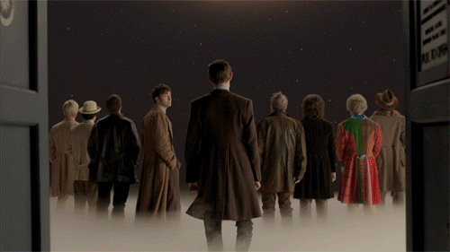
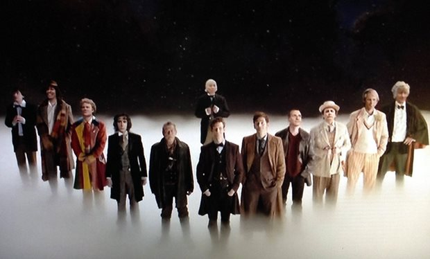
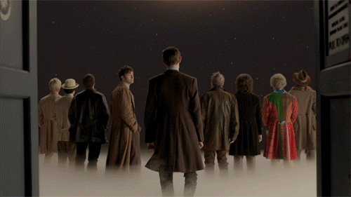
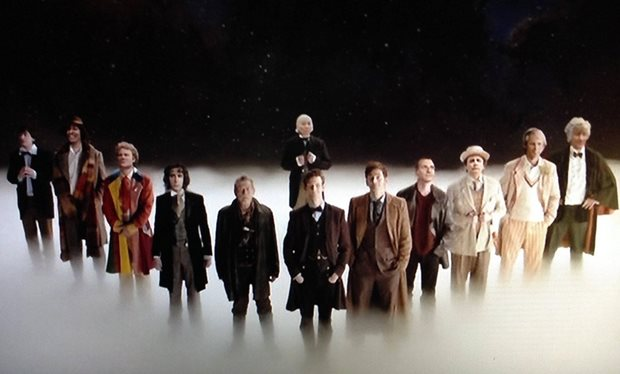

1st Doctor
William Hartnell (1963-1966)
View details »
Companions: Susan Foreman, Barbara Wright, Ian Chesterton, Vicki, Steven Taylor, Katarina, Sara Kingdom, Dodo Chaplet, Polly, Ben Jackson
2nd Doctor
Patrick Troughton (1966-1969)
View details »
Companions: Polly, Ben Jackson, Jamie McCrimmon, Victoria Waterfield, Zoe Heriot

4th Doctor
Tom Baker (1974-1981)
View details »
Companions: Sarah Jane Smith, Harry Sullivan, Leela, K-9, Romana, Adric, Nyssa, Tegan Jovanka
5th Doctor
Peter Davison (1982-1984)
View details »
Companions: Adric Nyssa, Tegan Jovanka, Vislor Turlough, Kamelion, Peri Brown

War Doctor
John Hurt (~ Time War ~)
View details »
Companions: Polly, Ben Jackson, Jamie McCrimmon, Victoria Waterfield, Zoe Heriot
9th Doctor
Christopher Eccleston (2005)
View details »
Companions: Rose Tyler, Adam Mitchell, Jack Harkness, Mickey Smith
10th Doctor
David Tennant (2005-2010)
View details »
Companions: Rose Tyler, Mickey Smith, Donna Noble, Martha Jones, Jack Harkness, Astrid Peth, Sarah Jane Smith, Jackson Lake, Rosita Farisi, Christina de Souza, Adelaide Brooke, Wilfred Mott
11th Doctor
Matt Smith (2010-2013)
View details »
Companions: Amy Pond, Rory Williams, River Song, Craig Owens, Clara Oswald
#TARDIS
Time and Relative Dimension in Space. Travel through time and space. And BIGGER on the INSIDE.
 



#Gallifrey_timelords
Gallifrey (/ˈɡælᵻfreɪ/ or /ˈɡælᵻfriː/) is a planet in the long-running British science fiction television series Doctor Who. It is the original home world of the Doctor, The Master, and The Rani, as well as other Time Lords that have been seen in the show. It was located in a binary star system within the constellation of Kasterborous, at "galactic coordinates ten-zero-eleven-zero-zero by zero-two from galactic zero centre".
#9thDoctor&Rose - Bad Wolf
~ The Doctor: "Do you know like we were saying? About the Earth revolving? It’s like when you’re a kid. The first time they tell you that the world’s turning and you just can’t quite believe it because everything looks like it’s standing still. I can feel it. {he grabs her hand} The turn of the Earth. The ground beneath our feet is spinning at a thousand miles an hour. And the entire planet is hurtling around the sun at sixty-seven thousand miles an hour and I can feel it. We’re falling through space, you and me. Clinging to the skin of this tiny little world and if we let go… {he drops her hand}. That’s who I am. "
~ Rose: “You don't just give up. You don't just let things happen. You make a stand! You say no! You have the guts to do what's right even when everyone else just runs away.”
#10th&Rose
~ The Doctor: "How long are you gonna stay with me?"
~ Rose: "Forever"
#11th&AmyPond
~ The Doctor: "I will always remember when the Doctor was me..."
~ Amy: "I remember something... Something old... Something new... Something borrowed... Something blue..."
#12th&ClaraOswald
~ Clara: Run you clever boy... And remember.
~ The Doctor: Time will never forget.
#DoctorWho_50th_Anniversary
~ The Doctor: "I have a new destination. My journey is the same as yours. The same as anyone. It's taken me so many years. So many lifetimes. But at last I know where I'm going. Where I've always been going. Home. The long way around."
 


